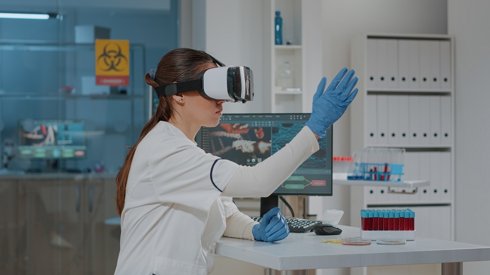

In today's fast-paced technological era, the rise of Virtual Reality (VR) in bio-chemical engineering stands out as a remarkable innovation. VR is not only transforming the way we envision complex biochemical processes, but it is also setting the stage for a more integrated and practical approach to chemical engineering education.
Let's delve into how VR is proving to be a game-changer for chemical engineering and why engineering colleges should not just adopt but embrace VR labs for higher education.
Immersive Engineering Education
Imagine stepping into a virtual lab where you can interact with chemical compounds, witness real-time reactions, and manipulate variables in a risk-free environment.
VR does precisely that.
It offers an immersive engineering experience that allows students to understand Chemical engineering education concepts in a highly interactive manner.
Such hands-on experience is invaluable, especially when dealing with potentially hazardous substances or intricate systems.
Furthermore, these virtual simulations can recreate scenarios that might be rare, expensive, or even impossible to achieve in a traditional lab setting.
For example, students can virtually alter the pressure and temperature conditions to understand the behavior of substances under extreme conditions, without the high costs and risks associated with physical experiments.
In addition to this, the VR environment provides immediate feedback. If a student makes an error or wishes to explore an alternate method, the VR system can quickly reset, allowing students to learn from their mistakes in real time and encouraging iterative experimentation.
This not only solidifies their foundational knowledge but also fosters a culture of curiosity and innovation.
Moreover, VR in engineering transcends geographical boundaries. A student in one part of the world can virtually collaborate with peers or experts from other regions, ensuring a global perspective and a diverse learning experience.
This global classroom approach enriches their understanding, offering insights into international standards, practices, and methodologies in chemical engineering.
Applications of VR in Chemical Engineering

From simulating massive industrial processes to visualizing molecular interactions, the applications of VR in chemical engineering are vast and transformative.
Here's a deeper dive into how VR is making waves in this field:
☑️ Optimizing Plant Designs
Before the construction of a new chemical plant begins, engineers can utilize VR to create a virtual prototype.
This allows them to walk through the plant, observe the placement of equipment, and even simulate processes.
This virtual prototyping ensures that any design flaws or inefficiencies are detected early on, saving time, money, and potential hazards in the future.
☑️ Simulating Fluid Dynamics
Understanding the flow of liquids and gases is critical in chemical engineering.
With features like X-ray view and separate parts in VR offered by platforms like iXR Labs, engineers can visualize and interact with fluid dynamics simulations, gaining a deeper comprehension of flow patterns, turbulence, and other vital parameters.
This interactive analysis makes it easier to predict and mitigate issues that might arise in real-life scenarios.
☑️ Remote Monitoring
VR in engineering is not just about simulations, instead, it is also about real-time applications. Engineers can use VR headsets to remotely monitor operations in a plant.
This is especially beneficial for plants located in challenging terrains or high-risk areas. Engineers can oversee operations, receive real-time data, and even guide on-ground staff without physically being present.
☑️ Enhancing Training and Safety Protocols
Training sessions in chemical engineering labs can now be taken to the next level with VR. Instead of merely listening to lectures or watching videos, trainees can immerse themselves in a virtual chemical plant, where they can practice safety protocols, handle emergencies, and understand equipment functionalities without any real-world risks.
☑️ Collaborative Research
VR promotes collaborative efforts in chemical engineering research. Engineers and scientists from around the globe can come together in a virtual space, sharing data, visualizing molecular structures, and brainstorming solutions for complex problems.
This kind of collaboration accelerates innovation and paves the way for groundbreaking discoveries.
"Unlock the potential of chemical engineering through immersive VR experiences that bridge theory with real-world application, revolutionizing the way you perceive and engage with the field."
Preparing Students for the Future

This is where VR labs for engineering colleges come into play.
They provide students with unlimited resources, simulate real-world scenarios, and allow for experimentation without any repercussions. Such exposure ensures students are not just theoretically proficient but also industry-ready.
Here's a closer look at the edge provided by VR for higher education:
☑️ Boundless Resources
Students can work with rare compounds, and state-of-the-art equipment, or even simulate large-scale industrial processes, all within the confines of a virtual space.
☑️ Real-world Simulation
Whether it's replicating a complex chemical reaction or simulating the operations of a massive industrial plant, VR brings these experiences to life, ensuring students grasp the nuances and practicalities of what they study.
☑️ Risk-free Experimentation
This encourages a deeper exploration, fostering creativity and innovation.
☑️ Customized Learning Experiences
This ensures that each student can learn at their own pace, reinforcing concepts and building confidence.
☑️ Preparation for Technological Advancements
Being comfortable with VR ensures that students are not just industry-ready, but future-ready.
☑️ Collaboration and Teamwork
This fosters a culture of collaboration and prepares students for global teamwork in their future careers.
 Get the App from Meta Store: Download Now
Get the App from Meta Store: Download Now
A Comprehensive Approach to Engineering Disciplines
We also see the surge of VR in mechanical engineering and VR in electrical engineering. This immersive technology allows students from various engineering branches to collaborate on interdisciplinary projects, providing a holistic understanding of real-world challenges.
In mechanical engineering, for instance, students can use VR to visualize and interact with intricate machine components, exploring their assembly, function, and design intricacies.
They can virtually 'disassemble' machines to understand their working principles and then 're-assemble' them, all within a controlled virtual space.
This hands-on approach drastically reduces the learning curve, as students can see the direct implications of their design decisions.
In electrical engineering, VR has become a powerful tool for circuit design and simulation. Students can construct complex circuitry in a virtual environment, test their designs, and immediately see the outcomes.
Potential system failures or inefficiencies can be identified and rectified in real time. This not only sharpens their problem-solving skills but also ensures a deeper grasp of electrical systems and their integrations.
Another groundbreaking advantage of VR labs for engineering colleges is the capacity for team-based projects that cross traditional departmental lines.
Imagine a scenario where mechanical engineering students design a robot, electrical engineering students work on its circuitry, and chemical engineering students develop a new energy-efficient battery for it.
All of these can be done collaboratively in a shared virtual space. This cross-disciplinary interaction mimics real-world industry projects, preparing students for the collaborative demands of modern engineering roles.
The Need for VR in Higher Education
The conversation surrounding VR in higher education, especially in engineering, has shifted from a futuristic vision to an immediate necessity. Here is the answer to the question, “Why engineering colleges should use VR labs?
☑️ Bridging the Gap Between Theory and Application
VR labs allow students to step into virtual environments where they can apply their theoretical knowledge in real-time, thus strengthening comprehension and retention.
☑️ Global Collaboration and Exposure
Such exposure prepares them for the interconnected global industry they'll be stepping into.
☑️ Continuous Evolution of Learning Materials
☑️ Diverse Learning Styles Accommodation
☑️ Enhanced Engagement and Interest
☑️ Preparing for the Job Market
Introducing VR in the educational phase ensures students aren't caught off-guard when they enter the professional domain.
Conclusion
The incorporation of Virtual Reality in chemical engineering marks a transformative period in the domain of education.
Its influence spans not just within chemical engineering but resonates across mechanical and electrical engineering domains as well.
As we advance, the emphasis on VR in engineering and the push for immersive learning environments will only grow stronger.
Institutions that recognize and adopt this wave of change will undoubtedly produce the next generation of leading engineers, ready to shape the future.